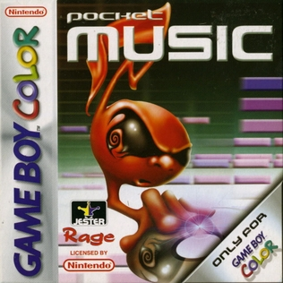

Pocket Music
A sample-based music creator for Game Boy Color / Game Boy Advance with grid sequencing and sample libraries. :contentReference[oaicite:6]{index=6}

Overview
Released in 2002 for Game Boy Color (and later GBA), Pocket Music allowed users to compose tracks using pre-recorded samples and a six-channel grid interface. It did not make much use of the Game Boy sound chip like other Game Boy music makers.
Core features
- Six-channel sample sequencer / sample-based instrument library
- Genre categories: Techno, drum & bass, breakbeat
- Grid interface, exportable via link cable on GBC version
Interesting Info
Pocket Music is notable because it brought sample-based music creation to the Game Boy Color era, enabling more modern sounds than pure wave/square tracker engines. It was a bridge between classic chiptune hardware and more sample-centric workflows. Its also interesting to note that one of the demo songs is a hilariously lo-fi, officially licensed track by Eminem. (A cover of "My Name Is")
Practical tips
- Experiment with switching genres to access different sample sets.
- Use the link-cable sharing or GBA expansion for longer compositions and collaborations.